REP 45.29.1 裁切器 辊 单元 
参考 PL:PL 45.29
Removal

执行IOT关机步骤. 确认电源已关闭并拔掉电源插头.
拆卸方背折叠裁切器的电源线支架.
拔出方背折叠裁切器的电源线.
分离方背折叠裁切器. (REP 45.1.1)
拆卸 前面 上方 盖板. (REP 45.2.1)
拆卸 前面 下方 盖板. (REP 45.2.2)
拆卸后盖板. (REP 45.4.1)
拆卸 出纸 盖板. (REP 45.4.2)
打开 the 顶部 右侧 盖板. (REP 45.5.1)
拆卸 裁切器 移动 传输 组件. (REP 45.27.1)
拆卸传感器 盖板. (图 1)
拆卸螺钉.
拆卸传感器 盖板.
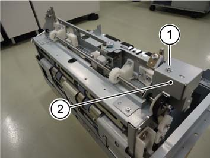
(图 1) tm445018
断开连接器. (图 2)
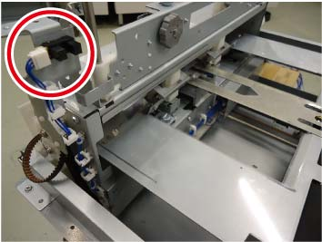
(图 2) tm445019
拆卸 安全注意事项 门 组件.
拆卸螺钉（x2） 在前面. (图 3)
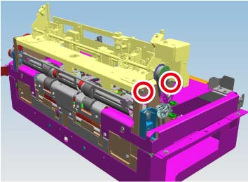
(图 3) tm445020
拆卸螺钉（x2） 在后面. (图 4)
拆卸 安全注意事项 门 组件. (图 4)
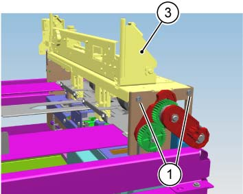
(图 4) tm445021
拆卸 链接 导轨 在后面. (PL 45.29) (图 5)
拆卸E型卡环 (x2).
拆卸 链接 导轨.
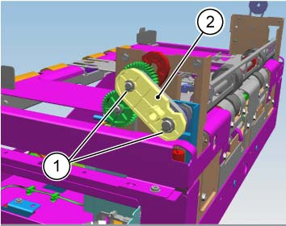
(图 5) tm445022
拆卸 Pulley 齿轮 在后面. (图 6)
拆卸皮带.
拆卸 Pulley 齿轮.

注意不要 drop the 销.
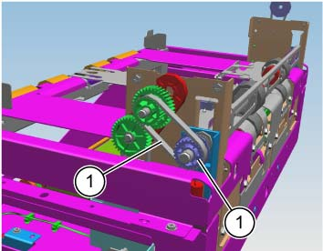
(图 6) tm445023
拆卸E型卡环 和 Bearing 在后面. (图 7)
拆卸E型卡环.
拆卸轴承.
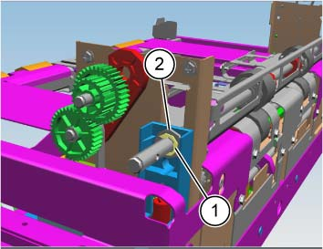
(图 7) tm445024
拆卸E型卡环 和 Bearing 在前面. (图 8)
拆卸E型卡环.
拆卸轴承.
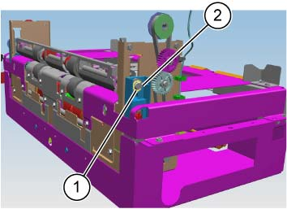
(图 8) tm445025
拆卸 Nip Tr 辊 组件. (PL 45.28) (图 9)
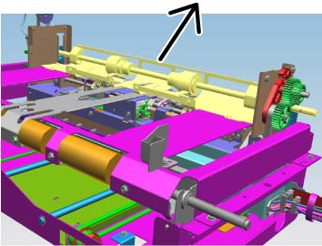
(图 9) tm445026
拆卸 后面 裁切 滑槽. (图 10, 图 11)
拆卸螺钉（x5）.
拆卸 后面 裁切 滑槽.
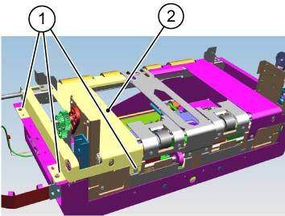
(图 10) tm445027
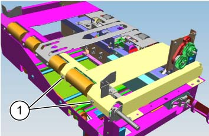
(图 11) tm445028
拆卸 前面 裁切 滑槽. (PL 45.28) (图 12, 图 13)
拆卸螺钉（x5）.
拆卸 前面 裁切 滑槽.
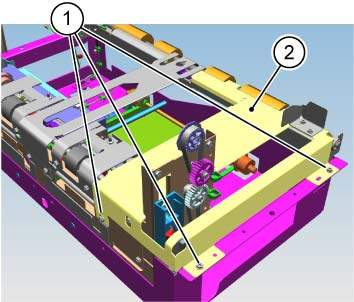
(图 12) tm445029
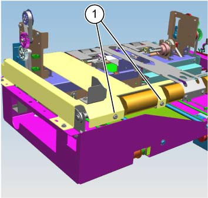
(图 13) tm445030
拆卸 中央 裁切 滑槽. (PL 45.28) (图 14, 图 15)
拆卸螺钉（x4）.
拆卸 中央 裁切 滑槽.
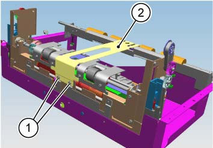
(图 14) tm445031
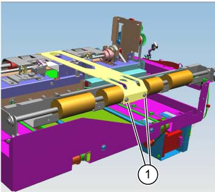
(图 15) tm445032
拆卸 低 按下 滑槽. (PL 45.29) (图 16)
拆卸螺钉（x4）.
拆卸 低 按下 滑槽.
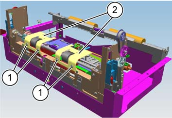
(图 16) tm445033
拆卸线束 盖板. (PL 45.29) (图 17)
拆卸螺钉（x2）.
拆卸线束 盖板.
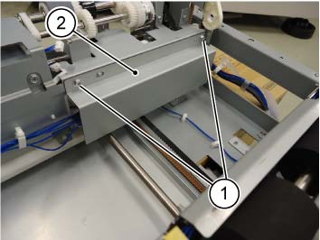
(图 17) tm445034
拆卸电机 盖板.
松开卡箍并拆除线束. (图 18)
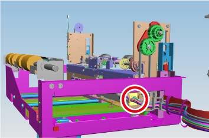
(图 18) tm445035
拆卸螺钉（x4）. (图 19)
拆卸电机 盖板. (图 19)
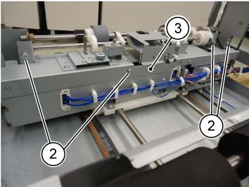
(图 19) tm445036
拆卸螺钉 该 secures 皮带 卡箍 在前面. (图 20)
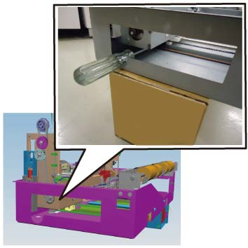
(图 20) tmw445022
拆卸 Tapping 螺钉 (x4) 该 固定 裁切器 辊 单元. (图 21)
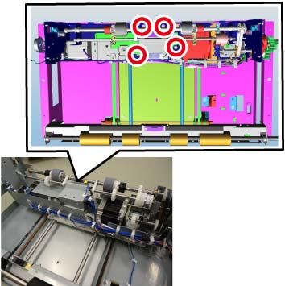
(图 21) tm445038
拆卸 裁切器 辊 单元. (图 22)
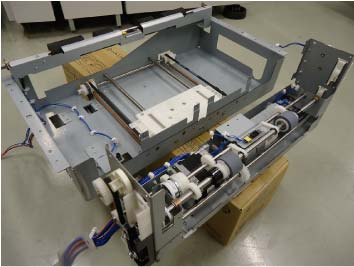
(图 22) tm445039